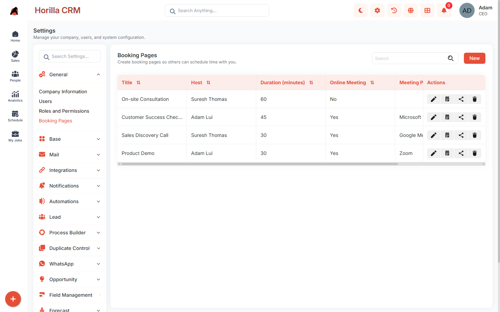
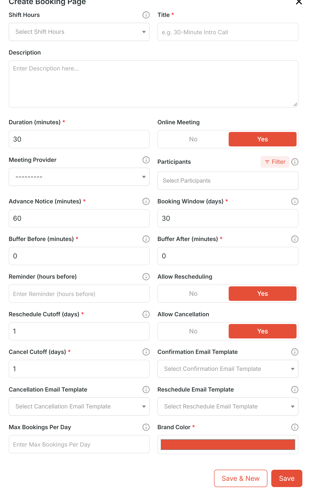
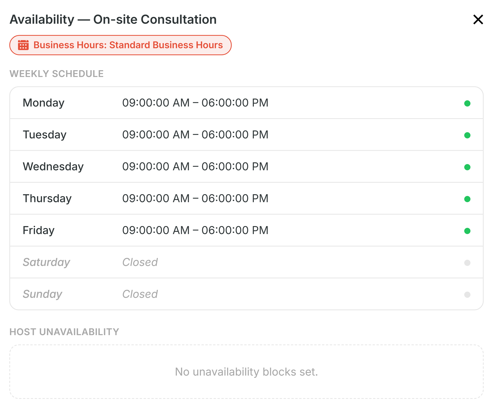

Overview
Go to Settings → General → Booking Pages. The page title is Booking Pages, and the line under it reads Create booking pages so others can
schedule time with you.
Click New to add one. Each row has Edit, Availability, Embed and Delete.
People who only have view-own access still see My Jobs → My Bookings and the meeting activities that belong to them. See My Bookings.

What a booking page stores
- Title, Description and a Slug used in the public URL.
- Host and optional Participants.
- Business Hour and Shift Hours. Break windows inside a shift are not offered as slots.
- Duration, buffers before and after, Max Bookings Per Day, Advance Notice and Booking Window in days.
- Online Meeting and a Meeting Provider, or a Location for an in-person meeting.
- Custom Questions asked of the booker.
- A reminder a set number of hours before the meeting.
- Whether rescheduling and cancellation are allowed, and the cutoff in days for each.
- Mail templates for confirmation, cancellation and reschedule, and a brand colour.
Create Booking Page
Click New. The form title is Create Booking Page. Host is the signed-in user, and Slug is built from the title. Neither is shown on the form.

| Field | Description |
|---|---|
| Shift Hours | Optional shift whose hours are offered instead of the company business hours. Placeholder: Select Shift Hours. |
| Title | Name of the page. Placeholder: e.g. 30-Minute Intro Call. |
| Description | Text shown with the page. Placeholder: Enter Description here... |
| Duration (minutes) | Length of each slot. The form opens at 30. |
| Online Meeting | Yes or No. Yes asks for a Meeting Provider. No asks for a Location. |
| Participants | Other people on the meeting. Filter narrows the list. |
| Advance Notice (minutes) | How soon a slot can be booked. Opens at 60. |
| Booking Window (days) | How far ahead a visitor can book. Opens at 30. |
| Buffer Before / Buffer After | Minutes kept free around each booking. Both open at 0. |
| Reminder (hours before) | When to send the reminder. Leave it blank for no reminder. |
| Allow Rescheduling / Reschedule Cutoff (days) | Yes shows the cutoff. Opens at 1 day. |
| Allow Cancellation / Cancel Cutoff (days) | Yes shows the cutoff. Opens at 1 day. |
| Email templates | Confirmation, Cancellation and Reschedule templates. |
| Max Bookings Per Day | Optional daily limit. |
| Brand Color | Colour used on the public page. |
Click Save to store the page, or Save & New to store it and open a blank form.
Availability
On a row, click Availability. The dialog title is Availability followed by the page title.
A badge names the schedule in use: Shift Hours when the page has a shift,
otherwise Business Hours. Weekly Schedule lists each day as
open, with the start and end, or Closed. Host Unavailability
lists blocks set for the host and participants. When there are none, it says No
unavailability blocks set.

Public page
The visitor picks a day from the date strip, then a free slot. The booking stores the booker's name, email, start and end, timezone, answers, status and, for an online meeting, the meeting URL. A confirmed booking can create the related meeting activity.
Expected Behaviour
- Slots that fall in a break, inside a buffer, inside the advance-notice window, or past the daily maximum are not offered.
- A booker can reschedule or cancel only when the page allows it and the cutoff has not passed.
- A host with only their own bookings still opens My Bookings.